Todo Sticker
This is a simple to-do app, which can make sticky notes and time-reminder functions.
Features
Add to-do as sticky notes.
Time-reminder function.
Filter to-do function.

Install on Windows
Install on Mac